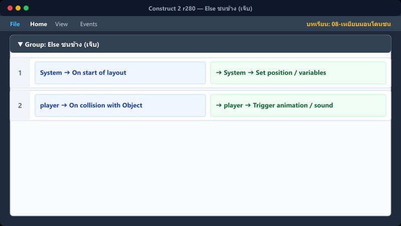
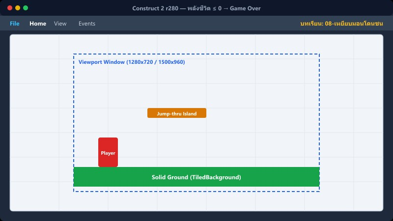

เป้าหมายบทนี้: แยกให้ชัด: กระโดดลงหลังมอน = ฆ่าได้ · ชนด้านข้าง = เจ็บ
On collision→Sub: เหยียบ→Else: เจ็บ→HP≤0
1โครงหลัก If / Else
กลุ่ม “เหยียบมอน / โดนชนลดหัวใจ”
player → On collision with eminy (Event แม่ ไม่ต้องมี Action)
สร้าง Sub-event 2 อันข้างใต้: กรณีเหยียบ · Else กรณีชนข้าง
2กรณีเหยียบ (ฆ่ามอน)

Platform → Is falling
player.Y ≤ eminy.Y − 10
Destroy eminy
Set vector Y = −650 (เด้งขึ้น)
Add 50 to คะแนน · Play coin
3Else ชนข้าง (เจ็บ)

System → Else
Is flashing (Invert)
Subtract 1 from พลังชีวิต
vector X = choose(player.X<eminy.X, −500, 500)
vector Y = −350 · Play hurt · Flash 3s
4พลังชีวิต ≤ 0 → Game Over

พลังชีวิต ≤ 0 + Trigger once + กำลังจบด่าน=0
โชว์ popup · บันทึกอันดับ = 1
อย่า Set position กลับจุดเกิดตอนชนข้าง — ออกแบบให้กระเด็นอย่างเดียว